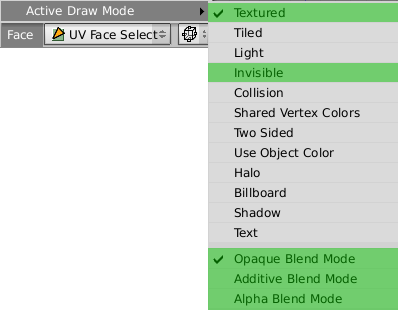
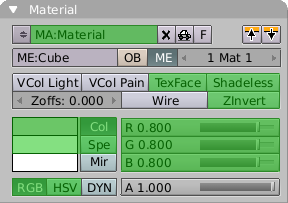
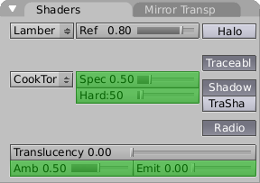
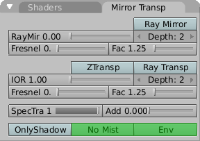
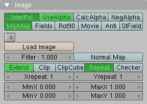

Blender to Ogre Exporter
Blender is an open source 3D content creation suite for modeling, animation, rendering and video post production. The Blender to Ogre Exporter is a python script to run directly within Blender. Currently it supports the export of- mesh objects with vertex colours, multiple materials, uv textures and blend modes,
- armature keyframe animations.
Installation
The script needs access to standard Python modules not shipped with Blender. Consult the Blender documentation at www.blender.org how to incorporate Python with Blender.
- Copy the script either into ".blender/scripts" or the user defined scripts directory.
- In the "Scripts Window" run "Scripts -> Update Menus".
Basic Usage
- In the "3D View" select the objects you want to export.
- In the "Scripts Window" run "Scripts -> Export -> Ogre XML".
- Choose your export options.
- Press the "Export" button.
Screenshot of the exporter interface.
Options
- Material File
- The name of the material script file that will be generated.
- Game Engine Materials
- Export materials as diplayed in the game engine. Materials are exported as displayed in the rendered results on default.
- Export Armature
- Export armatures and armature animations.
- World Coordinates
- Export objects in world coordinates instead of object coordinates.
- Coloured Ambient
- Use scaled diffuse colour as ambient colour instead of scaled white. This does only work for materials for which TexFace is not set.
- Mesh Scale Factor
- All meshs and bones are scaled on export by this factor.
- RotX
- Angle of an additional rotation around the x-axis of all objects on export. This rotation is applied first. Set it to -90 degrees to map Blender's up-vector (z-direction) to Ogre's default up-vector (y-direction).
- RotY
- Angle of an additional rotation around the y-axis. This rotation is applied second, after RotX.
- RotZ
- Angle of an additional rotation around the z-axis. This rotation is applied third, after RotY.
- Animation settings of
- Choose an object from the list of all objects selected for export. The animations that will be exported for that object are then displayed in the scroll area below. Each animation correspond to one line.
- Action name
- The name of the Blender action.
- Start frame (Sta:)
- Start frame of the animation.
- End frame (End:)
- End frame of the animation.
- Animation export name
- The animation name in the exported Ogre file.
- Delete
- Removes the animation from export.
- Add
- Add another animation to be exported.
- Update
- Updates the list of all objects selected for export from the currently selected objects in the "3D View". Also updates the list of possible actions, deletes animations for removed actions and sets default animations for new actions.
- Path
- All generated files of the exporter are written into this directory. Mesh files are named after the mesh object name in Blender with suffix ".mesh.xml". Skeleton files are named after the armature object name in Blender with suffix ".skeleton.xml".
- Export
- Export all objects in the list of objects selected for export.
- Quit
- Exit from the export script.
The script loads and saves its options to a text buffer "ogreexport.cfg" inside the current .blend file. You can disable this behaviour by changing the script variable KEEP_SETTINGS to 0.
If the OGRE_XML_CONVERTER script variable is set to the OgreXMLConverter executable, the converter is called on the exported XML files.
Specifics
Mesh
The script supports sticky and per face vertex uv coordinates, smoothed and non-smoothed normals, vertex colours. Each rectangle face is automatically converted into two triangle faces in the exported mesh.
The script does not support subdivision surface (SubSurf) options. To export a SubSurf object, you have to convert it into a Mesh object, "Object -> Convert Object Type... -> Mesh (keep original)".
The script does not support the "Double Sided" mesh option, use the "Two Sided" face option instead.
Material
In contrast to Ogre, Blender treats material, uv texture and blend mode separately. Also Blender distinguishs between material appearance in the game engine and material appearance in the rendered results.
Game Engine Materials
The material name has to be unique. Therefore, the name of the exported material consists of Blender's material name (if any), the face blend mode and texture file name (if any). If vertex colours are defined, a postfix "/VertCol" is appended. Also, if the two-sided face option is set, "/TWOSIDE" is appended.If a material is assigned to face, only the properties that affect the appearance in the game engine are exported. These are the "Col" and "Spe" colours, the "Amb", "Spec" and "Hard" factors and the "VCol Paint" and "TexFace" options.
Textures assigned with the UV/Image Editor are exported. Note that material image textures, which can be exported as rendering engine materials, give you more control over filtering and texture address modes.
Blender's face settings affect the mesh appearance only in the game engine. The properties exported by the script are marked green.Rendering Engine Materials
The name of the exported material is the same as in Blender. If the "Two Sided" face option is set, the suffix "/TWOSIDE" is appended. If the "TexFace" material option is set, the suffix "/TEXFACE" and the name of the texture image that is assigned with the UV/Image Editor is appended. The "Two Sided" face option has no effect in Blender's rendering results and is evaluated on export for convenience only.



Blender's material settings that affect the exported Ogre material are marked green.
The script exports image textures with "Map Input" set to "UV" and "Map To" set to "Col" and optional "Alpha". The supported image options are marked green.
| InterPol | MidMap | resulting filtering |
|---|---|---|
| yes | yes | trilinear |
| yes | no | linear linear none |
| no | yes | bilinear |
| no | no | none |
Armature
You must have no more than four weighted bone assignments per mesh vertex. If you have more, the script will eliminate the lowest weighted assignments and renormalise the other weights. All vertices must be assigned to at least one bone.
Armature animations are exported based upon keyframe ranges and action names. You can choose any frame as start and end frame of an animation. The script will automatically insert keyframes at the start and end of the exported animation and reverse the exported animation if the end frame is lesser than the start frame. In order to export armature animations of a mesh you don't have to select the armature separately.
The script does not evaluate action constraints. To export an action with constraints you have to convert the constraint effects into ipo keys ("Action Editor -> Bake") and choose the baked action in the animation settings.
Ogre does not inherit parent bone scaling by default.The animation speed in the export in terms of frames per second is taken from the corresponding scene render button.